Last updated: 2025-07-03
Checks: 7 0
Knit directory: Paul_CX_2025/
This reproducible R Markdown analysis was created with workflowr (version 1.7.1). The Checks tab describes the reproducibility checks that were applied when the results were created. The Past versions tab lists the development history.
Great! Since the R Markdown file has been committed to the Git repository, you know the exact version of the code that produced these results.
Great job! The global environment was empty. Objects defined in the global environment can affect the analysis in your R Markdown file in unknown ways. For reproduciblity it’s best to always run the code in an empty environment.
The command set.seed(20250129) was run prior to running
the code in the R Markdown file. Setting a seed ensures that any results
that rely on randomness, e.g. subsampling or permutations, are
reproducible.
Great job! Recording the operating system, R version, and package versions is critical for reproducibility.
Nice! There were no cached chunks for this analysis, so you can be confident that you successfully produced the results during this run.
Great job! Using relative paths to the files within your workflowr project makes it easier to run your code on other machines.
Great! You are using Git for version control. Tracking code development and connecting the code version to the results is critical for reproducibility.
The results in this page were generated with repository version 98c5469. See the Past versions tab to see a history of the changes made to the R Markdown and HTML files.
Note that you need to be careful to ensure that all relevant files for
the analysis have been committed to Git prior to generating the results
(you can use wflow_publish or
wflow_git_commit). workflowr only checks the R Markdown
file, but you know if there are other scripts or data files that it
depends on. Below is the status of the Git repository when the results
were generated:
Ignored files:
Ignored: .RData
Ignored: .Rhistory
Ignored: .Rproj.user/
Ignored: 0.1 box.svg
Ignored: Rplot04.svg
Untracked files:
Untracked: 0.1 density.svg
Untracked: 0.1.emf
Untracked: 0.1.svg
Untracked: 0.5 box.svg
Untracked: 0.5 density.svg
Untracked: 0.5.svg
Untracked: Additional/
Untracked: Autosome factors.svg
Untracked: CX_5461_Pattern_Genes_24hr.csv
Untracked: CX_5461_Pattern_Genes_3hr.csv
Untracked: Cell viability box plot.svg
Untracked: DEG GO terms.svg
Untracked: DNA damage associated GO terms.svg
Untracked: DRC1.svg
Untracked: Figure 1.jpeg
Untracked: Figure 1.pdf
Untracked: Figure_CM_Purity.pdf
Untracked: G Quadruplex DEGs.svg
Untracked: PC2 Vs PC3 Autosome.svg
Untracked: PCA autosome.svg
Untracked: Rplot 18.svg
Untracked: Rplot.svg
Untracked: Rplot01.svg
Untracked: Rplot02.svg
Untracked: Rplot03.svg
Untracked: Rplot05.svg
Untracked: Rplot06.svg
Untracked: Rplot07.svg
Untracked: Rplot08.jpeg
Untracked: Rplot08.svg
Untracked: Rplot09.svg
Untracked: Rplot10.svg
Untracked: Rplot11.svg
Untracked: Rplot12.svg
Untracked: Rplot13.svg
Untracked: Rplot14.svg
Untracked: Rplot15.svg
Untracked: Rplot16.svg
Untracked: Rplot17.svg
Untracked: Rplot18.svg
Untracked: Rplot19.svg
Untracked: Rplot20.svg
Untracked: Rplot21.svg
Untracked: Rplot22.svg
Untracked: Rplot23.svg
Untracked: Rplot24.svg
Untracked: S15.pdf
Untracked: TOP2B.bed
Untracked: TS HPA (Violin).svg
Untracked: TS HPA.svg
Untracked: TS_HA.svg
Untracked: TS_HV.svg
Untracked: Violin HA.svg
Untracked: Violin HV (CX vs DOX).svg
Untracked: Violin HV.svg
Untracked: data/AF.csv
Untracked: data/AF_Mapped.csv
Untracked: data/AF_genes.csv
Untracked: data/Annotated_DOX_Gene_Table.csv
Untracked: data/BP/
Untracked: data/CAD_genes.csv
Untracked: data/Cardiotox.csv
Untracked: data/Cardiotox_mapped.csv
Untracked: data/Col_DEG_proportion_data.csv
Untracked: data/Col_DEGs.csv
Untracked: data/Corrmotif_GO/
Untracked: data/DOX_Vald.csv
Untracked: data/DOX_Vald_Mapped.csv
Untracked: data/DOX_alt.csv
Untracked: data/Entrez_Cardiotox.csv
Untracked: data/Entrez_Cardiotox_Mapped.csv
Untracked: data/GWAS.xlsx
Untracked: data/GWAS_SNPs.bed
Untracked: data/HF.csv
Untracked: data/HF_Mapped.csv
Untracked: data/HF_genes.csv
Untracked: data/Hypertension_genes.csv
Untracked: data/MI_genes.csv
Untracked: data/P53_Target_mapped.csv
Untracked: data/Sample_annotated.csv
Untracked: data/Samples.csv
Untracked: data/Samples.xlsx
Untracked: data/TOP2A.bed
Untracked: data/TOP2A_target.csv
Untracked: data/TOP2A_target_lit.csv
Untracked: data/TOP2A_target_lit_mapped.csv
Untracked: data/TOP2A_target_mapped.csv
Untracked: data/TOP2B.bed
Untracked: data/TOP2B_target.csv
Untracked: data/TOP2B_target_heatmap.csv
Untracked: data/TOP2B_target_heatmap_mapped.csv
Untracked: data/TOP2B_target_mapped.csv
Untracked: data/TS.csv
Untracked: data/TS_HPA.csv
Untracked: data/TS_HPA_mapped.csv
Untracked: data/Toptable_CX_0.1_24.csv
Untracked: data/Toptable_CX_0.1_3.csv
Untracked: data/Toptable_CX_0.1_48.csv
Untracked: data/Toptable_CX_0.5_24.csv
Untracked: data/Toptable_CX_0.5_3.csv
Untracked: data/Toptable_CX_0.5_48.csv
Untracked: data/Toptable_DOX_0.1_24.csv
Untracked: data/Toptable_DOX_0.1_3.csv
Untracked: data/Toptable_DOX_0.1_48.csv
Untracked: data/Toptable_DOX_0.5_24.csv
Untracked: data/Toptable_DOX_0.5_3.csv
Untracked: data/Toptable_DOX_0.5_48.csv
Untracked: data/count.tsv
Untracked: data/heatmap.csv
Untracked: data/ts_data_mapped
Untracked: results/
Untracked: run_bedtools.bat
Unstaged changes:
Deleted: analysis/Actox.Rmd
Modified: analysis/_site.yml
Modified: data/DEGs/Toptable_DOX_0.5_3.csv
Modified: data/DOX_0.5_48 (Combined).csv
Modified: data/Total_number_of_Mapped_reads_by_Individuals.csv
Note that any generated files, e.g. HTML, png, CSS, etc., are not included in this status report because it is ok for generated content to have uncommitted changes.
These are the previous versions of the repository in which changes were
made to the R Markdown (analysis/Overlap_DEGs.Rmd) and HTML
(docs/Overlap_DEGs.html) files. If you’ve configured a
remote Git repository (see ?wflow_git_remote), click on the
hyperlinks in the table below to view the files as they were in that
past version.
| File | Version | Author | Date | Message |
|---|---|---|---|---|
| Rmd | 52c525b | sayanpaul01 | 2025-02-20 | Added Overlap of GO Terms across drugs, concentrations, and timepoints and updated index |
| html | 6a1580c | sayanpaul01 | 2025-02-19 | Build site. |
| Rmd | 0c8c19f | sayanpaul01 | 2025-02-19 | Added UpSet plots for DEGs across samples, drugs, concentrations, and |
| html | 0ea6c0c | sayanpaul01 | 2025-02-19 | Build site. |
| Rmd | bef2c81 | sayanpaul01 | 2025-02-19 | Added UpSet plots for DEGs across samples, drugs, concentrations, and |
| html | 1dcb0c8 | sayanpaul01 | 2025-02-19 | Build site. |
| Rmd | af51575 | sayanpaul01 | 2025-02-19 | Added Overlap of DEGs analysis and updated index. |
# Load DEGs Data
CX_0.1_3 <- read.csv("data/DEGs/Toptable_CX_0.1_3.csv")
CX_0.1_24 <- read.csv("data/DEGs/Toptable_CX_0.1_24.csv")
CX_0.1_48 <- read.csv("data/DEGs/Toptable_CX_0.1_48.csv")
CX_0.5_3 <- read.csv("data/DEGs/Toptable_CX_0.5_3.csv")
CX_0.5_24 <- read.csv("data/DEGs/Toptable_CX_0.5_24.csv")
CX_0.5_48 <- read.csv("data/DEGs/Toptable_CX_0.5_48.csv")
DOX_0.1_3 <- read.csv("data/DEGs/Toptable_DOX_0.1_3.csv")
DOX_0.1_24 <- read.csv("data/DEGs/Toptable_DOX_0.1_24.csv")
DOX_0.1_48 <- read.csv("data/DEGs/Toptable_DOX_0.1_48.csv")
DOX_0.5_3 <- read.csv("data/DEGs/Toptable_DOX_0.5_3.csv")
DOX_0.5_24 <- read.csv("data/DEGs/Toptable_DOX_0.5_24.csv")
DOX_0.5_48 <- read.csv("data/DEGs/Toptable_DOX_0.5_48.csv")
# Extract Significant DEGs
DEG1 <- CX_0.1_3$Entrez_ID[CX_0.1_3$adj.P.Val < 0.05]
DEG2 <- CX_0.1_24$Entrez_ID[CX_0.1_24$adj.P.Val < 0.05]
DEG3 <- CX_0.1_48$Entrez_ID[CX_0.1_48$adj.P.Val < 0.05]
DEG4 <- CX_0.5_3$Entrez_ID[CX_0.5_3$adj.P.Val < 0.05]
DEG5 <- CX_0.5_24$Entrez_ID[CX_0.5_24$adj.P.Val < 0.05]
DEG6 <- CX_0.5_48$Entrez_ID[CX_0.5_48$adj.P.Val < 0.05]
DEG7 <- DOX_0.1_3$Entrez_ID[DOX_0.1_3$adj.P.Val < 0.05]
DEG8 <- DOX_0.1_24$Entrez_ID[DOX_0.1_24$adj.P.Val < 0.05]
DEG9 <- DOX_0.1_48$Entrez_ID[DOX_0.1_48$adj.P.Val < 0.05]
DEG10 <- DOX_0.5_3$Entrez_ID[DOX_0.5_3$adj.P.Val < 0.05]
DEG11 <- DOX_0.5_24$Entrez_ID[DOX_0.5_24$adj.P.Val < 0.05]
DEG12 <- DOX_0.5_48$Entrez_ID[DOX_0.5_48$adj.P.Val < 0.05]library(ggplot2)
library(ggVennDiagram)
library(UpSetR)venntest <- list(DEG1, DEG2, DEG3)
ggVennDiagram(
venntest,
category.names = c("CX_0.1_3", "CX_0.1_24", "CX_0.1_48"),
fill = c("red", "blue", "green")
) + ggtitle("CX-5461 Vs VEH 0.1 micromolar")+
theme(
plot.title = element_text(size = 16, face = "bold"), # Increase title size
text = element_text(size = 16) # Increase text size globally
)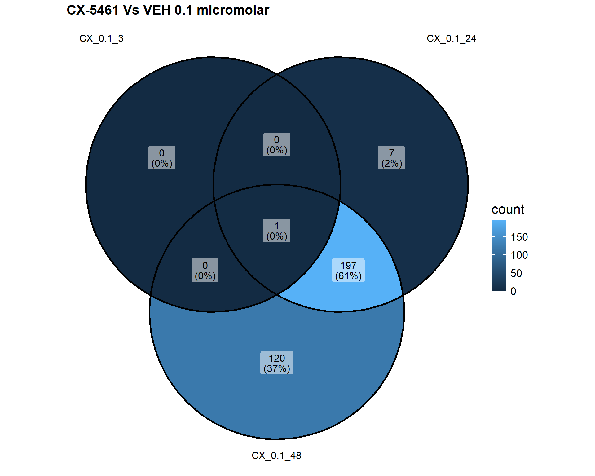
| Version | Author | Date |
|---|---|---|
| 1dcb0c8 | sayanpaul01 | 2025-02-19 |
venntest1 <- list(DEG4, DEG5, DEG6)
ggVennDiagram(
venntest1,
category.names = c("CX_0.5_3", "CX_0.5_24", "CX_0.5_48"),
fill = c("red", "blue", "green")
) + ggtitle("CX-5461 Vs VEH 0.5 micromolar")+
theme(
plot.title = element_text(size = 16, face = "bold"), # Increase title size
text = element_text(size = 16) # Increase text size globally
)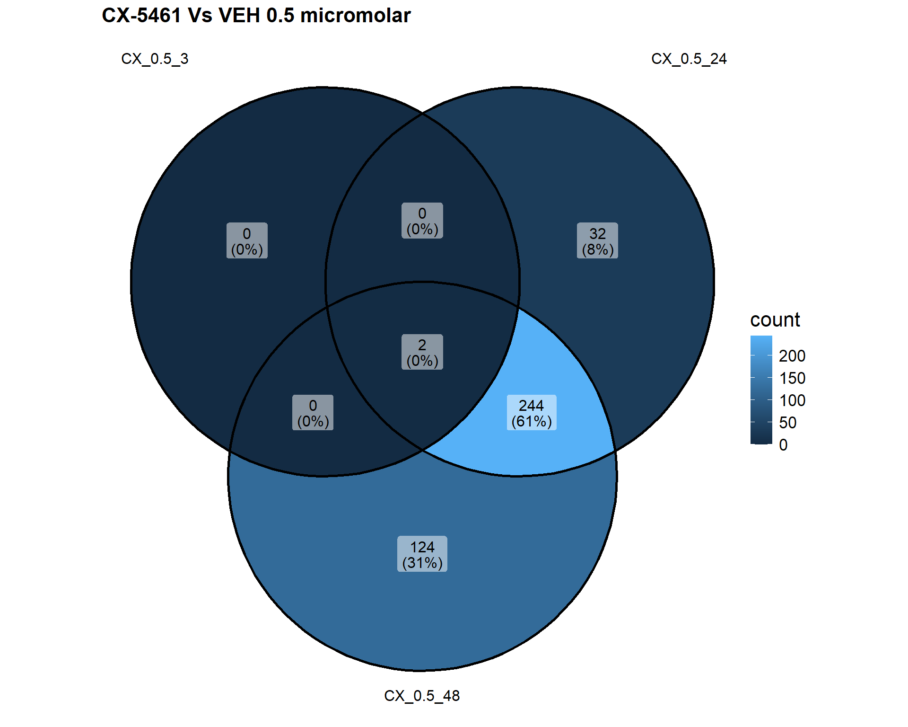
| Version | Author | Date |
|---|---|---|
| 1dcb0c8 | sayanpaul01 | 2025-02-19 |
venntest2 <- list(DEG7, DEG8, DEG9)
ggVennDiagram(
venntest2,
category.names = c("DOX_0.1_3", "DOX_0.1_24", "DOX_0.1_48"),
fill = c("red", "blue", "green")
) + ggtitle("DOX Vs VEH 0.1 micromolar")+
theme(
plot.title = element_text(size = 16, face = "bold"), # Increase title size
text = element_text(size = 16) # Increase text size globally
)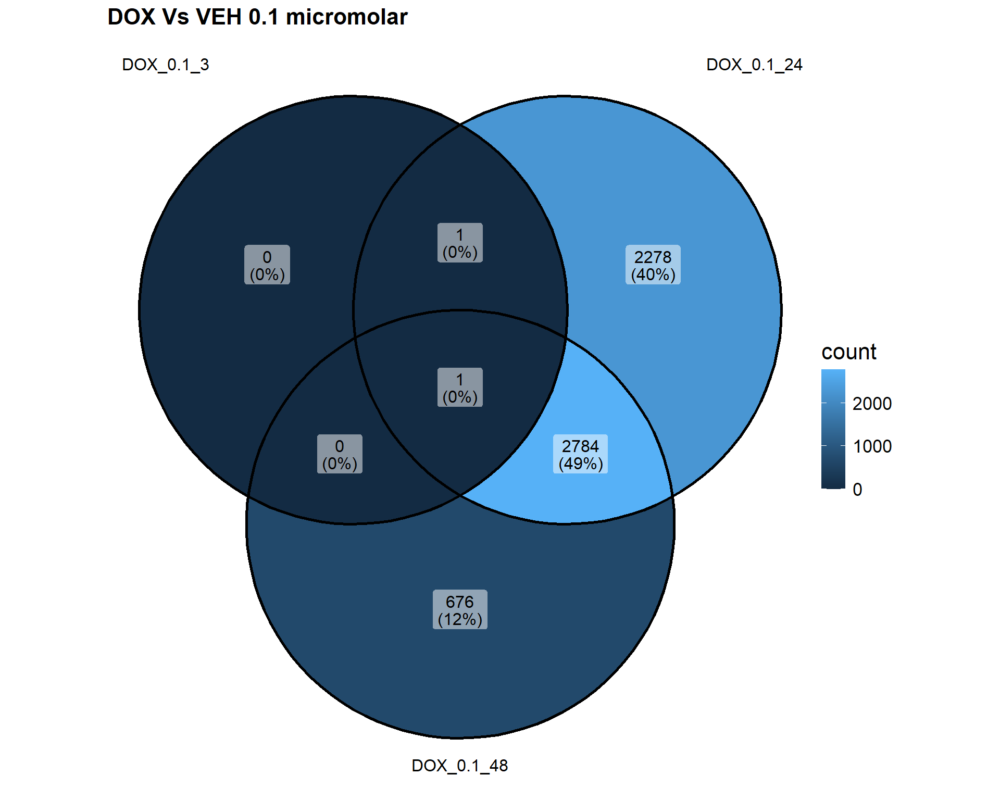
| Version | Author | Date |
|---|---|---|
| 1dcb0c8 | sayanpaul01 | 2025-02-19 |
venntest3 <- list(DEG10, DEG11, DEG12)
ggVennDiagram(
venntest3,
category.names = c("DOX_0.5_3", "DOX_0.5_24", "DOX_0.5_48"),
fill = c("red", "blue", "green")
) + ggtitle("DOX Vs VEH 0.5 micromolar")+
theme(
plot.title = element_text(size = 16, face = "bold"), # Increase title size
text = element_text(size = 16) # Increase text size globally
)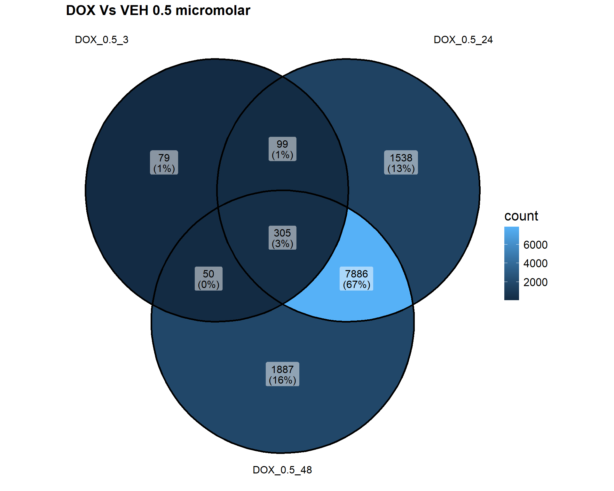
| Version | Author | Date |
|---|---|---|
| 1dcb0c8 | sayanpaul01 | 2025-02-19 |
venntest7 <- list(DEG1, DEG2, DEG3, DEG7, DEG8, DEG9)
ggVennDiagram(
venntest7, label = "count",
category.names = c("CX_0.1_3", "CX_0.1_24", "CX_0.1_48", "DOX_0.1_3", "DOX_0.1_24", "DOX_0.1_48")
) + ggtitle("0.1 micromolar")+
theme(
plot.title = element_text(size = 16, face = "bold"), # Increase title size
text = element_text(size = 16) # Increase text size globally
)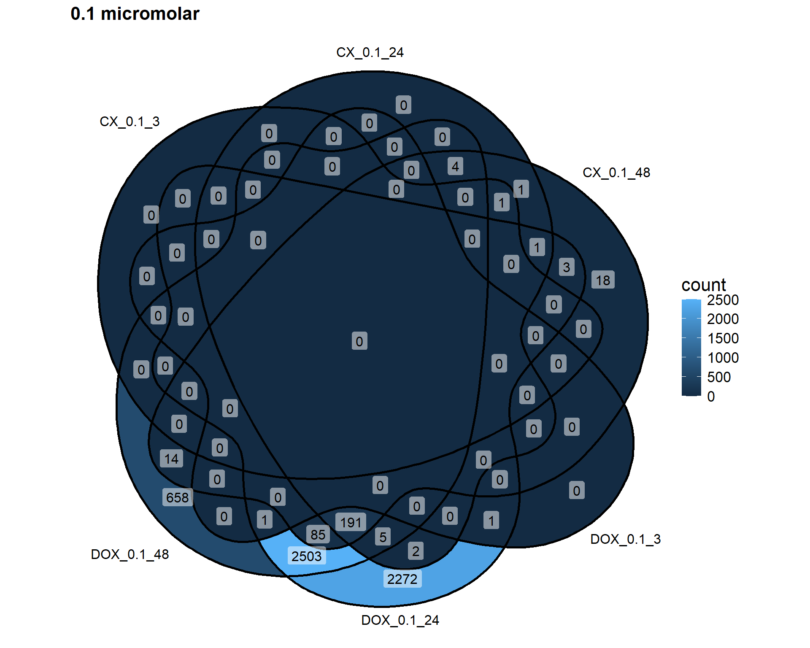
| Version | Author | Date |
|---|---|---|
| 1dcb0c8 | sayanpaul01 | 2025-02-19 |
venntest8 <- list(DEG4, DEG5, DEG6, DEG10, DEG11, DEG12)
ggVennDiagram(
venntest8, label = "count",
category.names = c("CX_0.5_3", "CX_0.5_24", "CX_0.5_48", "DOX_0.5_3", "DOX_0.5_24", "DOX_0.5_48")
) + ggtitle("0.5 micromolar")+
theme(
plot.title = element_text(size = 16, face = "bold"), # Increase title size
text = element_text(size = 16) # Increase text size globally
)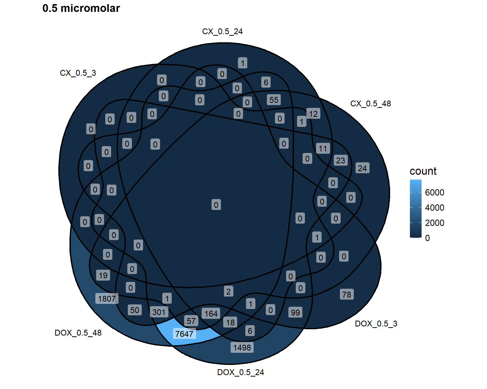
| Version | Author | Date |
|---|---|---|
| 1dcb0c8 | sayanpaul01 | 2025-02-19 |
venntest4 <- list(DEG1, DEG4, DEG7, DEG10)
ggVennDiagram(
venntest4, label_percent_digit = 2,
category.names = c("CX_0.1_3", "CX_0.5_3", "DOX_0.1_3", "DOX_0.5_3")
) + ggtitle("3hr")+
theme(
plot.title = element_text(size = 16, face = "bold"), # Increase title size
text = element_text(size = 16) # Increase text size globally
)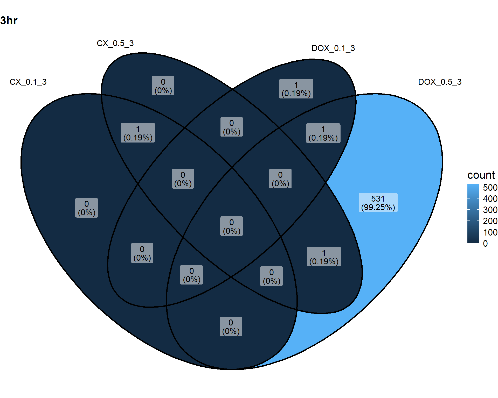
| Version | Author | Date |
|---|---|---|
| 1dcb0c8 | sayanpaul01 | 2025-02-19 |
venntest5 <- list(DEG2, DEG5, DEG8, DEG11)
ggVennDiagram(
venntest5, label_percent_digit = 2,
category.names = c("CX_0.1_24", "CX_0.5_24", "DOX_0.1_24", "DOX_0.5_24")
) + ggtitle("24hr")+
theme(
plot.title = element_text(size = 16, face = "bold"), # Increase title size
text = element_text(size = 16) # Increase text size globally
)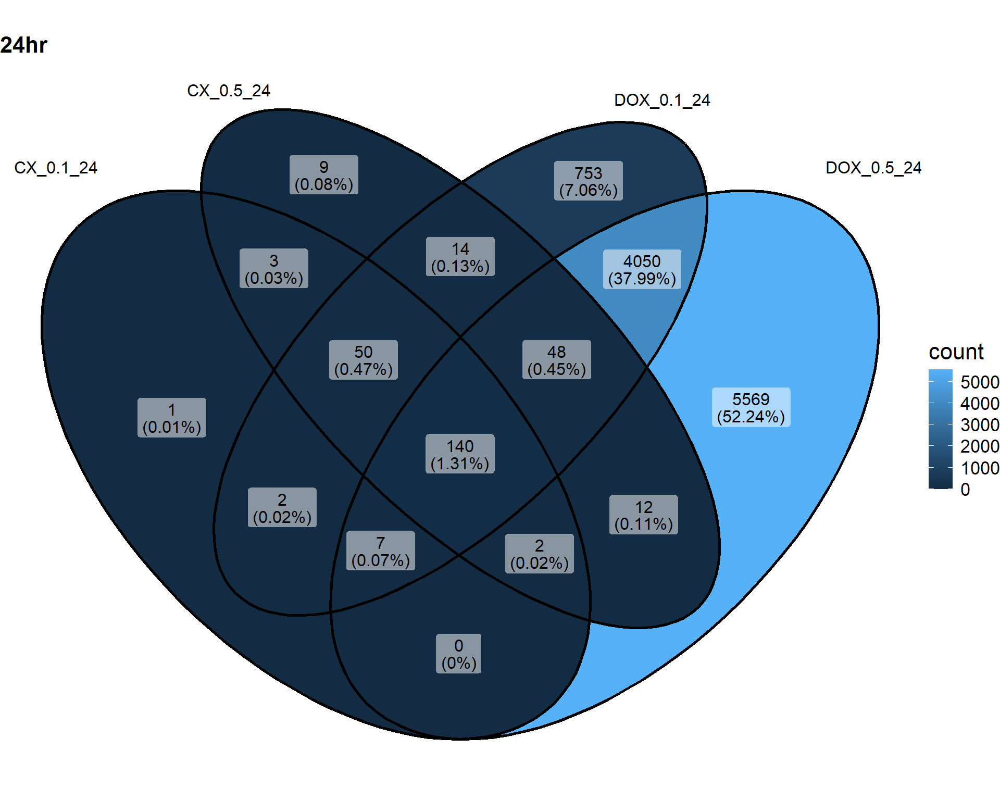
| Version | Author | Date |
|---|---|---|
| 1dcb0c8 | sayanpaul01 | 2025-02-19 |
venntest6 <- list(DEG3, DEG6, DEG9, DEG12)
ggVennDiagram(
venntest6, label_percent_digit = 2,
category.names = c("CX_0.1_48", "CX_0.5_48", "DOX_0.1_48", "DOX_0.5_48")
) + ggtitle("48hr")+
theme(
plot.title = element_text(size = 16, face = "bold"), # Increase title size
text = element_text(size = 16) # Increase text size globally
)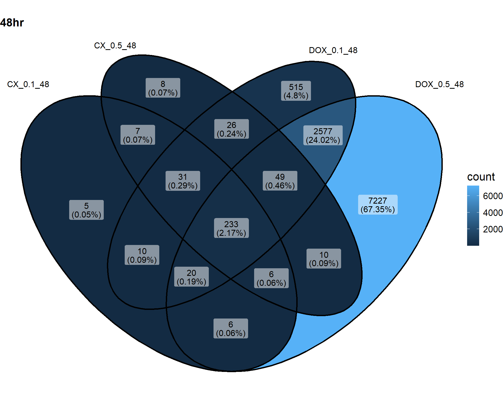
| Version | Author | Date |
|---|---|---|
| 1dcb0c8 | sayanpaul01 | 2025-02-19 |
# Extract Significant DEGs
# Create a list of DEGs for each sample
DEG_list <- list(
CX_0.1_3 = CX_0.1_3$Entrez_ID[CX_0.1_3$adj.P.Val < 0.05],
CX_0.1_24 = CX_0.1_24$Entrez_ID[CX_0.1_24$adj.P.Val < 0.05],
CX_0.1_48 = CX_0.1_48$Entrez_ID[CX_0.1_48$adj.P.Val < 0.05],
CX_0.5_3 = CX_0.5_3$Entrez_ID[CX_0.5_3$adj.P.Val < 0.05],
CX_0.5_24 = CX_0.5_24$Entrez_ID[CX_0.5_24$adj.P.Val < 0.05],
CX_0.5_48 = CX_0.5_48$Entrez_ID[CX_0.5_48$adj.P.Val < 0.05],
DOX_0.1_3 = DOX_0.1_3$Entrez_ID[DOX_0.1_3$adj.P.Val < 0.05],
DOX_0.1_24 = DOX_0.1_24$Entrez_ID[DOX_0.1_24$adj.P.Val < 0.05],
DOX_0.1_48 = DOX_0.1_48$Entrez_ID[DOX_0.1_48$adj.P.Val < 0.05],
DOX_0.5_3 = DOX_0.5_3$Entrez_ID[DOX_0.5_3$adj.P.Val < 0.05],
DOX_0.5_24 = DOX_0.5_24$Entrez_ID[DOX_0.5_24$adj.P.Val < 0.05],
DOX_0.5_48 = DOX_0.5_48$Entrez_ID[DOX_0.5_48$adj.P.Val < 0.05]
)
# Convert list to binary matrix
DEG_matrix <- fromList(DEG_list)
# Define order of sets
set_order <- names(DEG_list)upset(
DEG_matrix,
sets = set_order, # Specify the exact order of sets
order.by = "freq", # Order intersections by frequency
main.bar.color = "blue", # Color for the intersection bars
matrix.color = "black", # Color for matrix dots
sets.bar.color = rainbow(length(DEG_list)), # Assign different colors to set size bars
keep.order = TRUE, # Keep the specified order of sets
number.angles = 0, # Angle of numbers in intersection size bars
point.size = 2.5, # Size of points in the matrix
text.scale = 1, # Scale for text elements
show.numbers = "yes" # Show intersection size numbers directly
)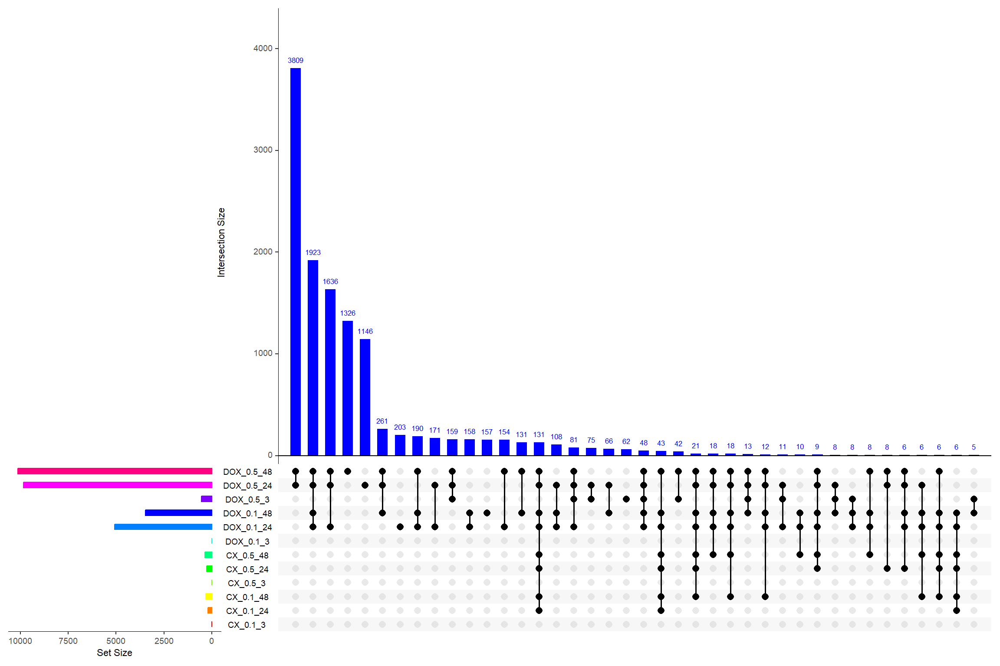
| Version | Author | Date |
|---|---|---|
| 0ea6c0c | sayanpaul01 | 2025-02-19 |
upset(
DEG_matrix,
sets = set_order, # Specify the exact order of sets
order.by = "freq", # Order intersections by frequency
main.bar.color = "blue", # Color for the intersection bars
matrix.color = "black", # Color for matrix dots
sets.bar.color = rainbow(length(DEG_list)), # Assign different colors to set size bars
keep.order = TRUE, # Keep the specified order of sets
number.angles = 0, # Angle of numbers in intersection size bars
point.size = 2.5, # Size of points in the matrix
text.scale = 1, # Scale for text elements
show.numbers = "yes", # Show intersection size numbers directly
nintersects = NA # Show all intersections including those with lowest size
)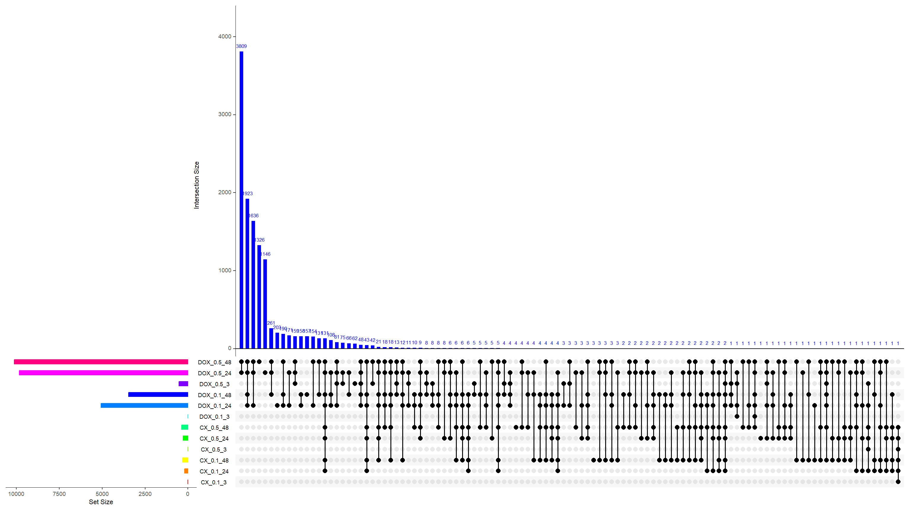
# Combine DEGs under CX-5461 and DOX
CX_DEGs <- unique(unlist(DEG_list[1:6]))
DOX_DEGs <- unique(unlist(DEG_list[7:12]))
# Create binary matrix for drug-specific DEGs
DEG_matrix_drug <- fromList(list(CX_5461 = CX_DEGs, DOX = DOX_DEGs))
# Generate the UpSet plot for drugs
upset(
DEG_matrix_drug,
sets = c("CX_5461", "DOX"),
order.by = "freq",
main.bar.color = "darkgreen",
point.size = 3,
text.scale = 1.5,
matrix.color = "purple",
sets.bar.color = c("blue", "red")
)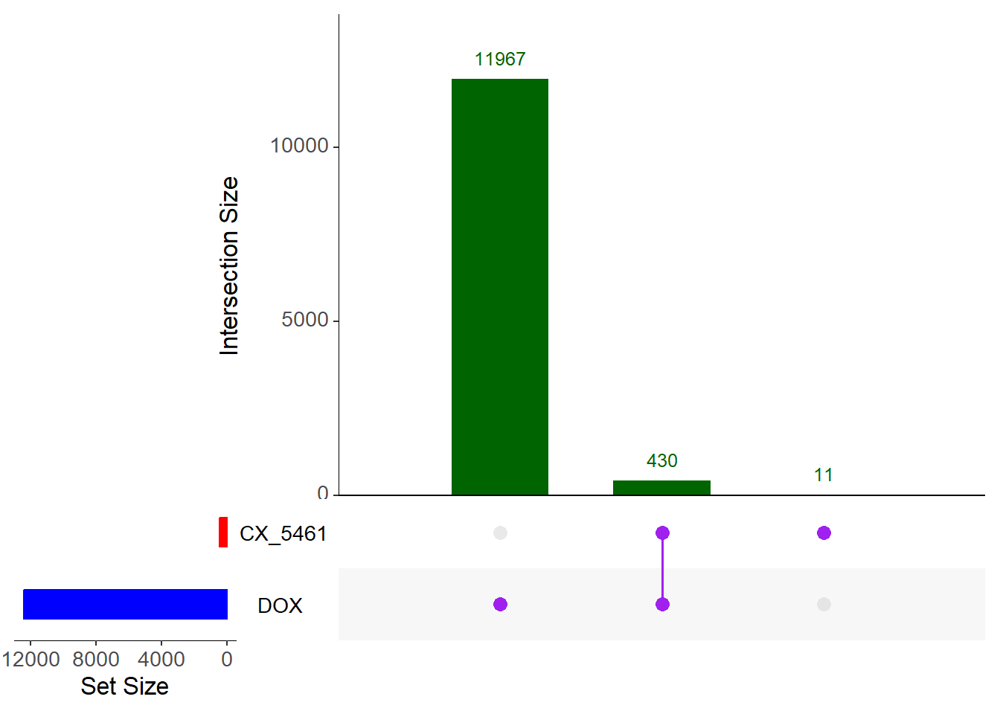
| Version | Author | Date |
|---|---|---|
| 0ea6c0c | sayanpaul01 | 2025-02-19 |
# Combine DEGs under concentrations 0.1 and 0.5
DEG_0.1 <- unique(unlist(DEG_list[c(1, 2, 3, 7, 8, 9)]))
DEG_0.5 <- unique(unlist(DEG_list[c(4, 5, 6, 10, 11, 12)]))
# Create binary matrix for concentration-specific DEGs
DEG_matrix_concentration <- fromList(list(Concentration_0.1 = DEG_0.1, Concentration_0.5 = DEG_0.5))
# Generate the UpSet plot for concentration
upset(
DEG_matrix_concentration,
sets = c("Concentration_0.1", "Concentration_0.5"),
order.by = "freq",
main.bar.color = "darkorange",
matrix.color = "darkblue",
sets.bar.color = c("cyan", "magenta"),
text.scale = 1.5,
keep.order = TRUE
)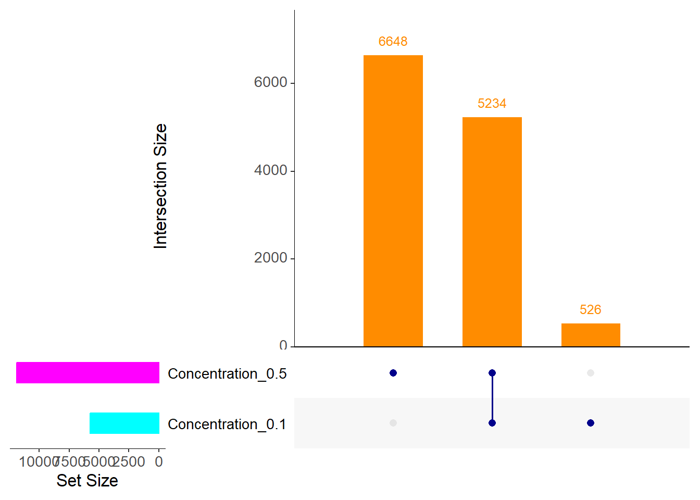
| Version | Author | Date |
|---|---|---|
| 0ea6c0c | sayanpaul01 | 2025-02-19 |
# Combine DEGs under timepoints 3hr, 24hr, and 48hr
DEG_3hr <- unique(unlist(DEG_list[c(1, 4, 7, 10)]))
DEG_24hr <- unique(unlist(DEG_list[c(2, 5, 8, 11)]))
DEG_48hr <- unique(unlist(DEG_list[c(3, 6, 9, 12)]))
# Create binary matrix for timepoint-specific DEGs
DEG_matrix_timepoint <- fromList(list(Timepoint_3hr = DEG_3hr, Timepoint_24hr = DEG_24hr, Timepoint_48hr = DEG_48hr))
# Generate the UpSet plot for timepoints
upset(
DEG_matrix_timepoint,
sets = c("Timepoint_3hr", "Timepoint_24hr", "Timepoint_48hr"),
order.by = "freq",
main.bar.color = "darkgreen",
matrix.color = "darkred",
sets.bar.color = c("blue", "orange", "purple"),
text.scale = 1.5,
keep.order = TRUE
)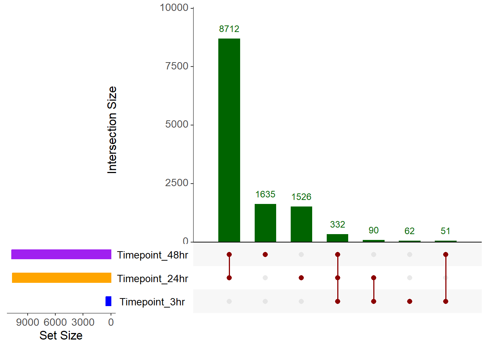
| Version | Author | Date |
|---|---|---|
| 0ea6c0c | sayanpaul01 | 2025-02-19 |
sessionInfo()R version 4.3.0 (2023-04-21 ucrt)
Platform: x86_64-w64-mingw32/x64 (64-bit)
Running under: Windows 11 x64 (build 26100)
Matrix products: default
locale:
[1] LC_COLLATE=English_United States.utf8
[2] LC_CTYPE=English_United States.utf8
[3] LC_MONETARY=English_United States.utf8
[4] LC_NUMERIC=C
[5] LC_TIME=English_United States.utf8
time zone: America/Chicago
tzcode source: internal
attached base packages:
[1] stats graphics grDevices utils datasets methods base
other attached packages:
[1] UpSetR_1.4.0 ggVennDiagram_1.5.2 ggplot2_3.5.2
[4] workflowr_1.7.1
loaded via a namespace (and not attached):
[1] gtable_0.3.6 jsonlite_2.0.0 dplyr_1.1.4 compiler_4.3.0
[5] promises_1.3.2 tidyselect_1.2.1 Rcpp_1.0.12 stringr_1.5.1
[9] git2r_0.36.2 gridExtra_2.3 callr_3.7.6 later_1.3.2
[13] jquerylib_0.1.4 scales_1.3.0 yaml_2.3.10 fastmap_1.2.0
[17] plyr_1.8.9 R6_2.6.1 labeling_0.4.3 generics_0.1.3
[21] knitr_1.50 tibble_3.2.1 munsell_0.5.1 rprojroot_2.0.4
[25] bslib_0.9.0 pillar_1.10.2 rlang_1.1.3 cachem_1.1.0
[29] stringi_1.8.3 httpuv_1.6.15 xfun_0.52 getPass_0.2-4
[33] fs_1.6.3 sass_0.4.10 cli_3.6.1 withr_3.0.2
[37] magrittr_2.0.3 ps_1.8.1 digest_0.6.34 grid_4.3.0
[41] processx_3.8.6 rstudioapi_0.17.1 lifecycle_1.0.4 vctrs_0.6.5
[45] evaluate_1.0.3 glue_1.7.0 farver_2.1.2 whisker_0.4.1
[49] colorspace_2.1-0 rmarkdown_2.29 httr_1.4.7 tools_4.3.0
[53] pkgconfig_2.0.3 htmltools_0.5.8.1